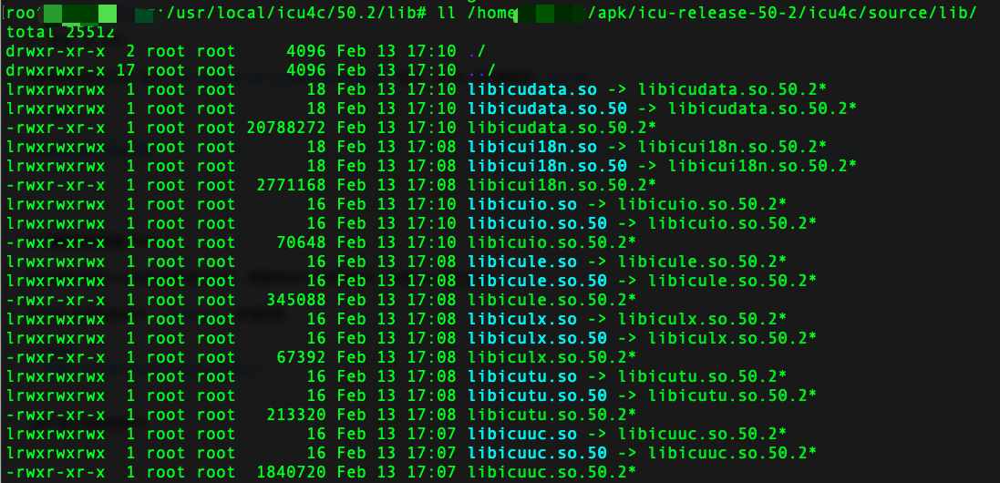

ubuntu 环境下使用 lnmp.org 下载的 lnmp 安装包编译安装PHP5.6时报错
configure: error: Unable to detect ICU prefix or no failed. Please verify ICU install prefix and make sure icu-config works.
下载地址 https://github.com/unicode-org/icu
去 release 中找到自己需要的版本安装，直接下载源码即可
注意新版本的 icu 已不支持 php5.6 ，我安装的 icu 版本：50.2
1、将下载的源码上传到服务器
scp ~/Downloads/icu-release-50-2.tar.gz root@47.94.12.45:/home/root/apk2、解压，进入安装目录
tar -zxvf icu-release-50-2.tar.gz
cd icu-release-50-2/icu4c/source/
3、安装
chmod +x runConfigureICU configure install-sh
# 指定安装目录
./configure --prefix=/usr/local/icu4c/50.2
make
sudo make install4、复制 .so 文件
等待安装完成之后 进入 icu-release-50-2/icu4c/source/lib 目录，将 so 文件复制到 /usr/lib

cp libic*.so* /usr/lib因为我是使用lnmp安装包安装的PHP，需要修改PHP安装脚本，设置 icu 所在目录
给PHP 编译安装命令 ./configure 新增配置
--with-icu-dir=/usr/local/icu4c/50.2接下来正常安装即可